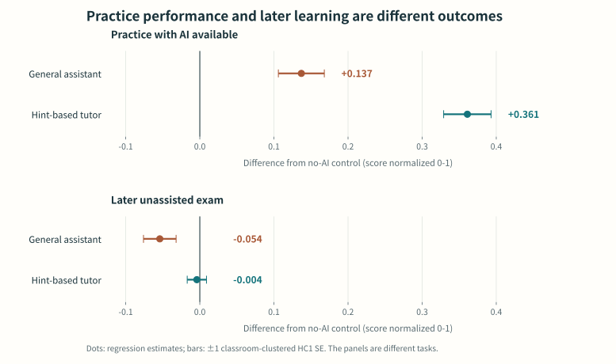

Assessing Human Competence in an Age of AI Augmentation
By making and using tools, people have extended the reach of body and mind. Just as Olympic swimming and canoeing test distinct skills, recognizing performance expanded by AI calls for assessment suited to changing capabilities and conditions.
Contents
- A stage for assessing skill with tools
- AI is already expanding opportunities to perform
- Strong performance does not reveal every part of expertise
- Mathematical proof reveals another form of augmentation: verification
- Solving a problem now is different from learning
- Foundations to preserve, performance to augment, and judgment to connect them
- Changing an examination starts with the intended use of its scores
- Institutions that develop foundations and augmentation together
- References
- Authorship and verification disclosure
Reading human history through technology reveals a long journey of extending the reach of body and mind. People loaded onto carts what they once carried by hand, launched boats toward places difficult to reach on foot, and used telescopes to see farther than their eyes could alone. Writing and calculating tools expanded what they could remember and calculate. As the tools people made changed, so did the ways they encountered the world.
Along the way, people learned both to make tools and to use them well. Taking the routes those tools opened required skill in choosing and handling them, and in interpreting the results. That skill, too, is learned and becomes part of a person’s abilities. To describe what a person can do, we therefore need to consider their capacity to accomplish work with technology alongside the strength and knowledge they have developed themselves.
As the conditions in which abilities are exercised change, what counts as achievement and how it is assessed must change too. Two scenes at the Olympics can help illustrate this relationship.
A stage for assessing skill with tools
In a swimming event, an athlete reaches forward, regulates their breathing, and cuts through the water. The recorded time reflects practiced strength and precision of movement. In a canoeing event, the athlete’s effort passes through boat and paddle into the water. The result reflects the boat’s performance as well as the athlete’s accumulated skill in paddling, maintaining balance, and distributing effort.
We recognize these as achievements in their respective sports. Canoeing compares the performance of people handling tools within defined equipment and competition conditions; swimming continues to develop practiced physical abilities. Together, they show how mastery of tools can count as human ability while abilities cultivated through the body are also assessed. [1] [2]
We can carry this perspective into assessing people who work with AI. When they analyze unfamiliar material, create code, or address problems in another specialty, technology changes the range of work they can accomplish. Alongside how well a model answers, we need to examine what a person can reliably achieve using it. Defining a problem, deciding what to delegate to AI, checking and revising its results, and responding to changed conditions all become part of the ability to be considered.
As human capabilities expand through tools, assessment must adapt to those changing capabilities and conditions. For people using AI, it should examine the quality of completed work alongside the choices, checks, and revisions they make in producing it. Assessment should examine independent understanding and achievement with AI separately, then ask whether the person’s judgment carries over to new problems.
Smart glasses facing an examination paper bring the question into focus. Some glasses send a photograph of the scene ahead for AI processing and provide an audio response. The existence of a feature must be distinguished from the score it could deliver on an actual examination. Even so, the scene makes visible how part of the process of producing an answer can already move outside the human body. [3] In examination guidance issued on November 9, 2026, South Korea’s Ministry of Education restricted electronic devices, including AI smart glasses. Both existing examinations that compare scores under defined conditions and future criteria for assessing people who use technology need to be designed around an explicit purpose. [4]
The Olympic analogy invites us to consider what should count as ability. Methods for measuring it properly need to be validated against the purposes of learning, selection, and qualification. To do that, we first need to examine how AI expands actual performance, and what learning and judgment people develop or retain through using it.
AI is already expanding opportunities to perform
Achievement with AI is more than an abstract prospect. In a study of the phased introduction of AI among 5,172 customer support agents, Brynjolfsson, Li, and Raymond found an average increase of about 15% in issues successfully resolved per hour. Novices and agents with lower previous performance gained more. The authors interpreted the findings as suggesting that AI may have transmitted some experienced agents’ practices. It was not an experiment randomly assigning the entire workforce, and some quality declined among the most highly skilled group. The figure cannot be generalized to every occupation. [5]
There are also opportunities to work across disciplinary perspectives. A field experiment analyzing 791 professionals from P&G’s R&D and commercial functions assigned product innovation proposals to individuals or two-person teams, with or without access to AI. Evaluators rated the proposals independently without knowing the conditions or information about their authors. Individuals using AI produced proposals of comparable quality to teams without AI, while differences associated with technical or commercial backgrounds also narrowed. [6]
This finding suggests that AI can help someone who knows one field develop proposals that include another function’s perspective. It does not show that inexperienced people acquired qualifications in a different profession. The participants were already domain experts, and proposal quality over a single day did not measure actual market outcomes or long-term expertise. Even so, the possibility of directly attempting some work that previously required waiting for another person’s explanation or obtaining an external solution matters.
Assessment must also respond to that possibility. Finishing familiar work faster is different from performing a previously inaccessible task to an external standard. To evaluate expansion through AI, we need to observe success on new tasks, the time required for checking and revision, and performance across different situations. Whether conventional subject scores can adequately describe this opportunity remains an empirical question.
This perspective connects with discussions of intellectual augmentation that predate AI. Engelbart’s 1962 framework addressed a system in which language, methods, and training change alongside tools. Its question is closer to what training and working methods powerful tools require than to whether powerful tools make training unnecessary. [7]
Strong performance does not reveal every part of expertise
The help a tool provides depends on the task. A study involving 758 BCG consultants reported gains in speed and quality on business tasks within the AI’s capabilities, alongside lower accuracy on a separate management judgment task where the model struggled. The latter analysis included 373 participants; pooling the two AI conditions, the difference in accuracy was about 19 percentage points below the condition without AI. Although formally published in 2026, the experiment used GPT-4 in 2023. Its results should not be read as a performance table for every current model. [8]
Applying this finding to assessment suggests observing when people accept an AI suggestion and when they choose further checks, alongside the quality of the result.
Claims that people and AI outperform people alone also need to specify the comparison. A meta-analysis combining 370 effect sizes from 106 experiments found that combined performance was, on average, better than human performance alone. It did not find an average synergistic gain beyond the better of the human and AI working separately. Its collection period, from 2020 through the first half of 2023, means it does not represent all recent generative AI systems and agents. Nevertheless, the comparison principle remains: human-only, AI-only, and combined performance need to be distinguished. [9]
Recognizing expertise requires attention to the work a person can be entrusted with, alongside how an artifact was produced. Is there evidence for granting the same authority to someone who generates a draft with AI, someone who can correct its errors, and someone who can implement the result under real conditions and respond to failure? This question concerns the work that can be entrusted both to established experts and to people who have newly become able to perform it.
Mathematical proof reveals another form of augmentation: verification
Mathematics extends this perspective further. In the November 11, 2026 installment of Quanta Magazine’s Transformation, Konstantin Kakaes discussed progress in autoformalization: translating long mathematical proofs into a form that a machine can check. Proofs written for mathematicians leave many intermediate steps and much shared background knowledge implicit. Expressing them as explicit definitions, propositions, and proofs allows computers to take on part of the burden of following an extensive argument from beginning to end. [10]
One prominent example is the formalization of Fermat’s Last Theorem, an already established result. In September 2026, Anthropic released work in which AI agents wrote Lean code following the route of the existing proof. Lean is a proof assistant for expressing and checking mathematical propositions and proofs. This achievement does not mean that AI discovered a previously unresolved theorem. Its significance lies in translating mathematics accumulated by people into a proof that a computer can check. Formalization researcher Kevin Buzzard reported that he compiled the released result himself and also ran checks comparing the target statement with the standard theorem in Mathlib. This review compared his report with the public materials; we did not independently rerun the full code. [11]
Several distinct activities are connected here. AI generates candidate proofs or translates existing arguments into a formal language. Lean’s kernel checks whether a proof supports the stated proposition according to the given definitions, axioms, and logical rules. This differs from asking the AI again whether an answer is correct and receiving the same judgment. The checker’s role and trusted assumptions must still be made explicit, but a plausible sentence from the generator need not be accepted as true merely because it sounds convincing. Tools can expand not only the ability to produce answers, but also the ability to check them. [12]
Whether the proposition checked by the machine is the problem originally intended remains a separate question. For example, if a question about all integers is translated into a proposition restricted to positive integers, a valid proof still does not settle the full original question. Checks must also establish whether gaps have been left as assumptions instead of completing the proof, or whether additional conditions have been introduced without acknowledgment. Lean’s official validation guidance likewise explains that successful execution is not the final step: the theorem statement and its dependence on axioms also need examination. As verification becomes more automated, specifying exactly what has been verified becomes more important. [12]
There is a further distinction between establishing correctness and developing understanding. Even after a long proof has been checked against the rules, learning why its conclusion follows and transferring its ideas to another problem remain tasks to be done. Buzzard acknowledged the achievement in autoformalization while distinguishing it from the mathematical explanations he seeks, which people can read and understand. [11] A student’s submission can contain a valid proof even if the student cannot explain every detail. The value of that artifact and what the student has learned require different evidence. Education can recognize a successful check while also observing whether the student can explain the central idea and show where the argument changes when its conditions change. AI can also help with explanations and the choice of problems, so these need not be declared permanently human roles. In education today, the important question is what understanding develops in the learner through that assistance.
The mathematical example cannot be applied directly to every kind of work. If real-world data are missing or a model’s assumptions do not hold, the conclusion about reality may differ even when the logic within the model is correct. Nevertheless, the example offers a useful insight for assessment design. Alongside the ability to work through an answer again unaided, assessment can examine the ability to choose checks appropriate to the task, explain their guarantees and limits, and leave results that others can verify. From this perspective, expertise in the AI era includes skill in building a trustworthy verification process alongside skill in producing an artifact. This is an assessment proposal developed by the review from the mathematical example.
Solving a problem now is different from learning
Treating immediate AI-assisted performance and learning as the same score obscures an important distinction. Bastani and colleagues conducted a high school mathematics field experiment comparing general GPT-4 assistance, a teacher-designed tutor focused on hints, and no AI. In this short experiment involving approximately 1,000 students, both AI conditions improved practice performance. On a subsequent examination completed without reference materials, however, the general-assistance group scored lower. The hint-based tutor mitigated this decline but did not establish better independent examination performance than the control group. [13]
Figure 1 separates practice from the independent examination in the same paper. A positive practice effect does not guarantee an improvement on the subsequent test. For general assistance, the independent examination difference was -0.054 on a score normalized to a 0-1 scale. The often-cited decline of about 17% is a relative change against the control-group mean, not a fall of 17 percentage points. The difference in independent examination scores between the hint-based tutor and the no-AI control was not statistically significant, but this does not establish equivalence between the conditions.


There is also evidence that a carefully designed tutor can support learning. In Kestin and colleagues’ introductory physics study at Harvard, the analyzed sample of 194 students experienced AI tutoring and classroom active learning across two lessons. Immediate post-test scores were higher under the tutoring condition, which included teacher-prepared correct answers, guidance for individual questions, and self-paced study. This is an effect of that educational design, not of every situation in which students are given a general chat interface. Long-term retention and transfer to unfamiliar problems require separate examination. [14]
The distinction also matters when learning new skills at work. A 2026 preprint by Shen and Tamkin compared developers working with or without GPT-4o chat assistance as they learned a new Python library. The study included 52 developers. The assisted group scored lower on a subsequent AI-free quiz covering concepts, code reading, and debugging; the improvement in average completion time was not statistically significant. A quiz following a short experiment cannot establish long-term loss of expertise. [15]
Together, these studies show why the presence of AI alone cannot explain learning outcomes. They differed in how answers were provided, opportunities for independent thought, teacher-designed feedback, and what was measured after learning and when. Education needs to test whether a route to submitting a good result also develops the ability to solve the next problem.
Foundations to preserve, performance to augment, and judgment to connect them
These findings support a proposed direction for education. The following three categories are this review’s design proposal, not an already validated universal scale of ability. What must be done independently also needs to be reconsidered as fields and tools change.
First, education should develop foundational competence for understanding and learning independently. The language skills needed to read a statement and distinguish its claims, the numeracy needed to understand denominators, units, and magnitudes, and the scientific reasoning needed to distinguish evidence from hypotheses also help people interpret AI answers. To plan a useful check, a person needs to ask what a “20% improvement” is relative to, whether a correlation supports a causal claim, or whether essential information is missing. This category also includes articulating gaps in knowledge, maintaining attention, and checking one’s own understanding. The aim is not to memorize everything. It is to verify understanding that makes further learning and consequential judgment possible.
Second is the ability to expand the range of work through tools. AI can help gather material, run unfamiliar code, compare hypotheses and designs, and learn the terminology of another specialty. Education should provide opportunities to attempt such work. Assessment can examine whether the final result meets its requirements, whether verifiable calculations, data, and execution conditions remain available, and whether the work is completed within time and cost limits. Neither prompt length nor the number of calls is inherently a measure of achievement.
The connection between these abilities is judgment about what to delegate and how to check it. This includes setting goals, dividing work, testing candidates generated by AI, and investigating and correcting unexpected results. As mathematical formalization shows, verification can use tools, and the scope of what those tools have checked also needs to be understood. It does not mean that every calculation must be finished by hand if a tool stops working. Often the necessary judgment is deciding what can continue, what should be suspended, whom to involve, and what further information to obtain.
Figure 2 connects this relationship to a single analytical task. Foundational understanding contributes to reading the material and formulating checks; AI expands the scope of exploration and calculation; judgment connects the results of both processes to an actual choice. A high score on one does not mean the others have been observed.

Returning to the Olympic scene, the feel developed through physical practice and the mastery of boat and paddle both contribute to human achievement. A person using AI can likewise develop the ability to produce results with tools alongside the ability to understand what those results mean. Assessment should distinguish a tool’s output from the scope of a person’s understanding and judgment, while also observing what their combination accomplishes. Education should be refined through actual tasks that reveal which foundational understanding supports which uses of tools.
Changing an examination starts with the intended use of its scores
The same mathematics score can mean different things when used to determine the next lesson, rank applicants for university admission, or confirm graduation standards. In educational measurement, validity concerns the evidence supporting a score interpretation for a particular purpose. Before asking whether an examination permits AI, we need to state what its scores are intended to tell us. [16]
For learning diagnosis, we need to know which explanations and exercises a student needs next. For selection, we need evidence that the score is an appropriate basis for allocating limited opportunities and that it relates to subsequent learning and performance. For a qualification, we need a minimum standard for entrusting the relevant activity to someone safely and effectively. Qualification examinations cannot all be treated as competitions to select a few top scorers. [16]
Methods of observation can be combined according to these purposes. The following table develops a single classroom task: judging the claim that a new method A improves outcomes over an existing method B. It is a proposal, not a reconstruction of a particular study’s data or an actual qualification examination.
| Performance to observe | What the student does | Evidence the assessor examines |
|---|---|---|
| Foundational understanding | Explain the denominators, units, and comparison conditions in a short table, and identify missing information | Conceptual and numerical accuracy; reasons for withholding judgment |
| Analysis with AI | Analyze a larger dataset and produce reproducible calculations and a written judgment | Result quality, sources and conditions, the ability of others to check the work again, time and cost |
| Verification and revision | Check incorrect denominators, citations, and causal conclusions in an answer supplied by the teacher, and revise it with appropriate checking tools | Distinguishing errors from false alarms; what was checked and the scope of the guarantee; the basis and consequences of revisions |
| Changed conditions and transfer | Adjust the conclusion when data or goals change, then perform a new task later | Understanding the limits of application, retained learning, and the choice of further checks |
AI assistance can be restricted when checking foundational understanding if that serves the task’s purpose; accessibility and communication support need not be removed indiscriminately. An AI-permitted task should specify whether everyone receives common tools and practice opportunities or whether choosing tools within a budget is itself part of the assessment. An answer in which a teacher deliberately introduces errors is material for a verification task, not a sample measuring the actual frequency of AI errors.
In a mathematics class, the same principle can become a sequence of reading a theorem’s conditions, generating a candidate proof with AI, checking that the formalized proposition matches the original question, and explaining the central idea and the effects of changing the conditions. The proposal is not to ask every student to write a vast Lean proof. It is to use small propositions appropriate to the course to make visible what the student delegated to a tool and the grounds on which they accepted the conclusion. Reproducible calculations and comparison with source data can play a similar role in an analysis course, but successful code execution alone does not validate the representativeness of the data or a causal interpretation.
Explanation and revision can be assessed through a short oral discussion, live performance, or written responses. One implementation assessed live coding and explanation among 58 students in an engineering computation course. However, this uncontrolled implementation report did not establish the superiority of the new assessment. An oral assessment can mix disciplinary understanding with fluency, anxiety, and language background. Agreement between assessors, alternative response formats, additional time, and the staff required for preparation and marking all need examination. [17]
There is no need to combine these results immediately using arbitrary weights. A student who performs exceptionally with AI but cannot identify a critical error needs different further teaching from one who understands independently but cannot complete an actual analysis. If a qualification specifies essential standards, evidence is also needed to determine whether strong scores elsewhere can compensate for a particular deficiency. Claims that a new assessment is better require comparison with existing methods on subsequent performance, delayed learning, disadvantages across groups, and operating costs.
Institutions that develop foundations and augmentation together
Education in South Korea does not operate under a single rule of prohibition. The Ministry of Education’s December 2025 measures for AI in performance assessment proposed subject-specific permissions, disclosure of how AI was used, advance instruction, and direct observation of students’ work, rather than a blanket ban on classroom-linked performance assessment. Kyung Hee University’s instructor guide includes a design example that assesses AI-assisted interpretation of data together with verification of its validity. These are policy and design guidelines, not studies establishing implementation outcomes or learning effects. Restrictions in the College Scholastic Ability Test and AI use in assessments serving other purposes can already be discussed separately within institutions. [18]
Australia’s TEQSA reform guidance likewise addresses both confirming student learning and preparing students for a society in which AI is widespread. Resource and operational demands differ depending on whether learning is verified in every subject, at important points across a degree, or through a combination. The task extends beyond changing one examination: it requires designing the experiences and evidence accumulated across a curriculum. [19]
Fairness concerns access as well as permission to use tools. Canoe sprint rules on equipment innovation address availability, reasonable cost, and equal opportunity; AI assessments can likewise specify both performance and access conditions. The existence of rules does not guarantee that actual disparities have been resolved. [2] Assessment needs to be designed and monitored so that differences in purchasing power for better models, connectivity, and time to become familiar with the tools are not mistaken for differences in student ability.
Even if assessment changes, university places and jobs may remain scarce. Choosing a legitimate basis for allocation is a social decision that measurement accuracy alone cannot settle. At the same time, if AI reduces the costs of learning and making things, people previously unable to begin may gain opportunities to learn and present results. Institutions should provide ways to verify those achievements, with standards for recognizing new performance alongside support for rebuilding foundations.
For individual augmentation to become shared knowledge, other people must be able to test, revise, and reuse the results. Mathematical formalization makes this relationship concrete. When a theorem already proved in a shared library becomes material for the next proof, earlier achievements provide a foundation for new work. Anthropic’s formalization also relied on the existing Mathlib library and on searching for and reusing intermediate theorems. [11] Expanding ability can move beyond giving individuals more answers toward increasing the knowledge that people can jointly check and build upon.
From this perspective, education can provide experience not only in submitting a good answer but also in leaving an artifact that the next person can understand, inspect, revise, and reuse. This is a reason to include explanations, sources, execution conditions, and the conditions under which the work may fail in assessment. More answers or proposals do not automatically constitute more reliable knowledge. They need to be connected to evidence and conditions, correction of errors, and the solution of subsequent problems. The short experiments discussed here cannot settle the long-term formation of expertise or the course of civilization, but they can clarify what else needs to be observed.
If we read the history of technology as a history of expanding ability, assessment too must evolve to suit changing capabilities and conditions. Just as swimming and canoeing are recognized as achievements in their respective sports, assessment in the AI era should consider both independent understanding and the ability to achieve results with technology. Mathematical proof adds the ability to use checking tools, understand the scope of their guarantees, and leave evidence that others can build upon. Developing new assessment criteria means observing what a person knows, what they can do with AI, and how the resulting work can be trusted as distinct questions, then testing how well the answers describe subsequent learning and work.
References
- World Athletics, Athletic Shoe Regulations, Book C–C2.1A, effective 20 April 2026; World Aquatics, World Aquatics Competition Regulations, February 2026 (accessed 15 November 2026).
- International Canoe Federation, Canoe Sprint Competition Rules 2025, effective 1 January 2025, progression-system review approved 13 March 2026 (accessed 15 November 2026).
- Ray-Ban, Ray-Ban Meta FAQ (accessed 15 November 2026).
- 교육부, 수능 당일 '스마트안경' 착용하면 내년까지 시험자격 박탈, 대한민국 정책브리핑, 2026년 11월 9일 (accessed 15 November 2026).
- E. Brynjolfsson, D. Li, and L. Raymond, Generative AI at work, Q. J. Econ. 140, 889–942 (2025).
- F. Dell’Acqua, C. Ayoubi, H. Lifshitz, R. Sadun, E. Mollick, L. Mollick, Y. Han, J. Goldman, H. Nair, S. Taub, and K. R. Lakhani, The cybernetic teammate: A field experiment on generative AI and teamwork, Organ. Sci. 37, 1217–1242 (2026).
- D. C. Engelbart, Augmenting human intellect: A conceptual framework, SRI Summary Report AFOSR-3223 (Stanford Research Institute, 1962).
- F. Dell’Acqua, E. McFowland III, E. Mollick, H. Lifshitz, K. C. Kellogg, S. Rajendran, L. Krayer, F. Candelon, and K. R. Lakhani, Navigating the jagged technological frontier: Field experimental evidence of the effects of artificial intelligence on knowledge worker productivity and quality, Organ. Sci. 37, 403–423 (2026).
- M. Vaccaro, A. Almaatouq, and T. Malone, When combinations of humans and AI are useful: A systematic review and meta-analysis, Nat. Hum. Behav. 8, 2293–2303 (2024).
- K. Kakaes, AI’s ability to ‘autoformalize’ proofs is changing math, Transformation, Quanta Magazine, 11 November 2026 (accessed 15 November 2026).
- Anthropic, Formalizing Fermat’s Last Theorem, 4 September 2026; Anthropic, Fermat’s Last Theorem in Lean 4, commit 6e837e75355538c7f80bab5b956861e86c4eacc2; K. Buzzard, FLT: Anthropic has beaten me to it, Xena, 4 September 2026 (accessed 15 November 2026).
- J. Avigad, L. de Moura, S. Kong, and S. Ullrich, Introduction, in Theorem Proving in Lean 4, version 4.33.0, Sec. 1.1; Lean project, Elaboration and Compilation, in The Lean Language Reference; Lean project, Validating a Lean Proof, in The Lean Language Reference (accessed 15 November 2026).
- H. Bastani, O. Bastani, A. Sungu, H. Ge, Ö. Kabakcı, and R. Mariman, Generative AI without guardrails can harm learning: Evidence from high school mathematics, Proc. Natl. Acad. Sci. U.S.A. 122, e2422633122 (2025); Correction for Bastani et al., Generative AI without guardrails can harm learning: Evidence from high school mathematics, Proc. Natl. Acad. Sci. U.S.A. 122, e2518204122 (2025).
- G. Kestin, K. Miller, A. Klales, T. Milbourne, and G. Ponti, AI tutoring outperforms in-class active learning: An RCT introducing a novel research-based design in an authentic educational setting, Sci. Rep. 15, 17458 (2025).
- J. H. Shen and A. Tamkin, How AI impacts skill formation, arXiv:2601.20245v2 (2026).
- American Educational Research Association, American Psychological Association, and National Council on Measurement in Education, Standards for Educational and Psychological Testing (American Educational Research Association, Washington, DC, 2014).
- L. A. Barba and L. Stegner, The conversational exam: A scalable assessment design for the AI era, Computer 59(6), 132–139 (2026).
- 교육부, 교육부와 교육청이 함께 ‘수행평가 시, 인공지능(AI) 활용 관리 방안’을 마련하였습니다, 2025년 12월 23일; 경희대학교 도서관, AI 활용 교육 가이드라인: 교수자 가이드, updated 22 September 2026 (accessed 15 November 2026).
- J. M. Lodge, M. Bearman, P. Dawson, H. Gniel, R. Harper, D. Liu, J. McLean, and L. Ucnik, Enacting assessment reform in a time of artificial intelligence (Tertiary Education Quality and Standards Agency, 2025).